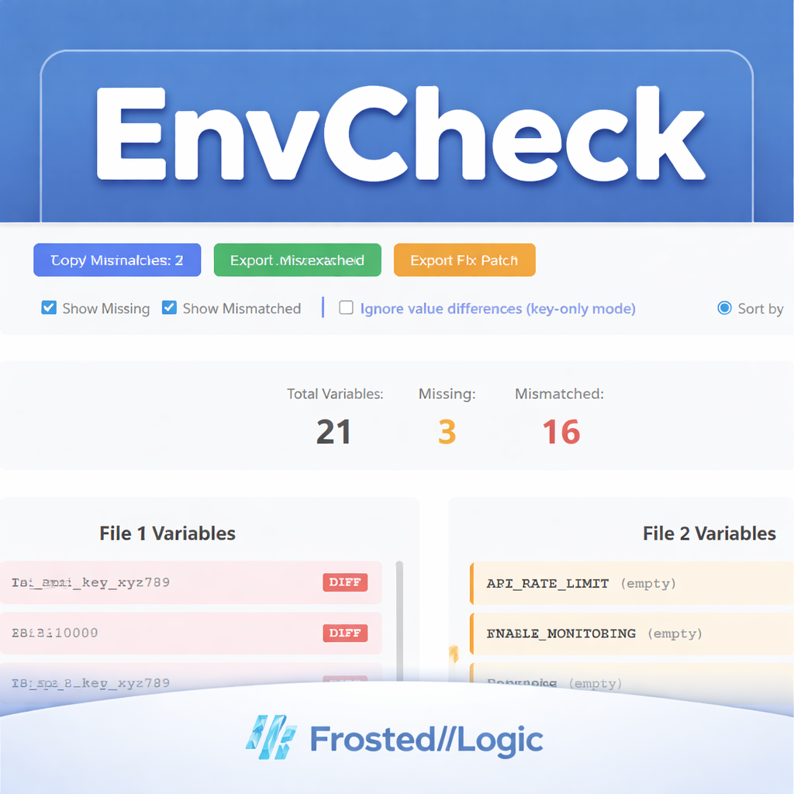

Frosted//Logic Microtools
EnvCheck
Audit .env files in seconds. Compare 2 or 3 environments, instantly find missing and mismatched variables,
and export clean templates and fix patches.
Privacy-first: EnvCheck runs entirely in your browser. Files are not uploaded or stored.
What it does
- Compare 2-file or 3-file environments
- Filter: Missing / Mismatched / Matched
- Key-only mode for audits
- Export
.env.exampletemplates - Export fix patches (2-file mode)
How it works
1. Upload .env files
Drop or select 2 or 3 environment files to compare.
2. Review differences
Filter by missing, mismatched, or matched keys.
3. Export results
Generate templates or fix patches you can apply immediately.
Screenshot

FAQ
Are my .env files uploaded anywhere?
No. EnvCheck runs entirely in your browser. Files never leave your machine.
What’s the difference between Free and Pro?
Free runs online in your browser. Pro is a downloadable offline version you can keep forever.
Can I compare more than 2 files?
Yes—EnvCheck supports both 2-file and 3-file comparison modes.
Does Pro require installation?
No installation. Just unzip and open index.html in your browser.